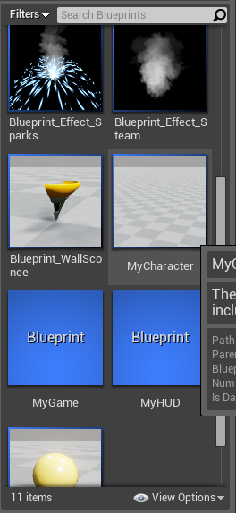
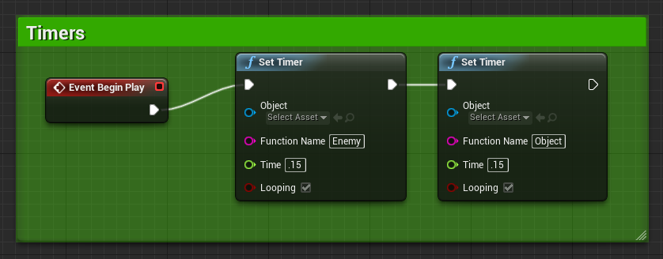
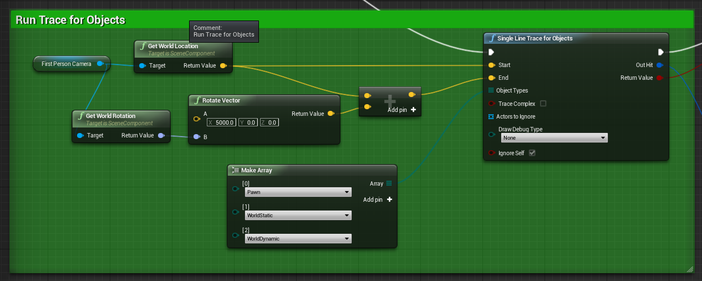
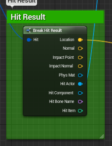
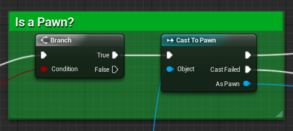
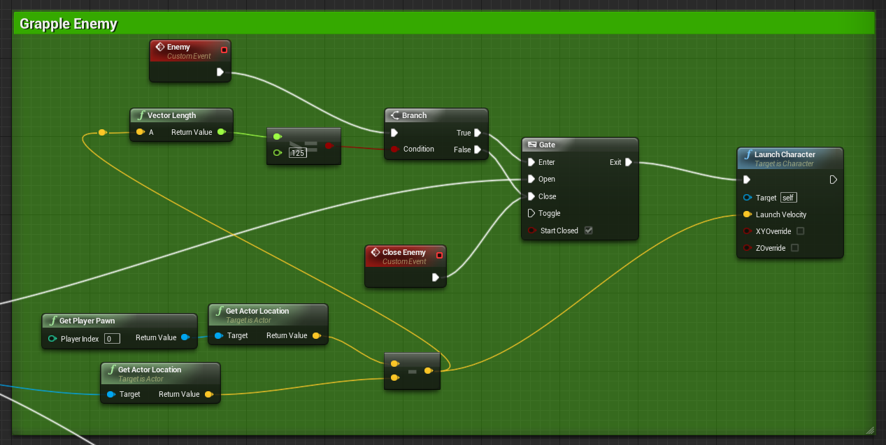
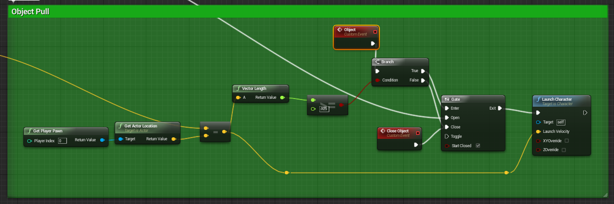
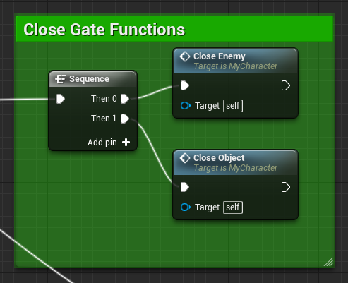

Grappling Hook Tutorial
Author: Adam Davis
Special Thanks: PenguinTD
Contents
Overview
One of the most useful objects in many games is the trusty grappling hook. Depending on which game, it may be used as a way to climb up objects manually, or it could be something that flings you toward another location. With the hook we are making, we are taking the latter route and adding just a little bit more flare for fun. Here are a few pieces of information you should know before we get started:
- Two Fire Modes
- With the grappling hook, we want to be able to perform two different types of moves, depending on what we hit with it.
- Pull to Location – When the hook traces to an object that is not an AI object (or whatever objects you choose), we will pull the player to that object. This is useful for walls, ceilings, etc.
- Pull to Player – If the hook hits an AI object, we are going to pull them to us for whatever insidious purpose we choose *insert evil villain laugh here*.
- What Project we use – For the sake of simplicity, I will be using the First Person Blueprint template.
- I used the base MyCharacter blueprint provided with the starter content, though if you are inclined to make your own this can easily be added to another character blueprint.

Set Timers
Something we should go ahead and start with is the fact that in this grappling hook, we will not use the Tick function at all. The reason we are avoiding this is that tick is frame dependent, which can cause weird fluctuations based on individual computer specs. Instead, we are going to use a handy function: the timer.

- Set up timers – In your player character blueprint, right click and create an Event: Begin Play node. Drag off of the exec pin and type in timer, select “Set Timer”. Create one more of these and give each a unique name in the Function Name input as we will need 2 separate timers for our grappling hook. I named mine “Enemy” and “Object” for simplicity. It is important to make sure that you check the “looping” feature. This will make sure that our timers continue to provide input.
Key Press, Trace, Array, and Camera
- Set your movement to a key press. In this example, I used H
- Next, we want to create a single line trace for objects. This will check in a line that we determine whether or not objects that it hits are of a certain type, if they are, the trace will respond accordingly.
- Set up Array with all objects you intend to pull. In our case, we are checking for world static, world dynamic, and pawn. The reason for this is we want to be able to pull ourselves to many different surfaces while pulling enemies to us. You can limit this depending on what fits your needs.
- Pawn
- WorldStatic
- WorldDynamic
- The traces start point should be the player’s camera (for first person view). The end location is a rotated vector from the world rotation + 5000 + the camera’s world location. This puts the point at 5000 units away from whatever the camera’s rotation is.

Branch – Cast-to
- We want to do a branch after the trace to check and see if the trace returns a value. If it does, we want to know what type it is. Create a Break Hit Result node from the “Out Hit” section of our single line trace for objects. Then, from the “Hit Actor” output, create a Cast to Character (or, if you have another object type specifically for AI, use that).


Pull Pawn to Player
- If the cast succeeds and the object hit by the trace is a pawn, we want to pull that pawn to us. Think of this like the Bulletstorm Grapple Beam. Our first step is going to be to create a gate node; the cast to Character success output will drive the open input.
- Now that you have the gate, there are a few more things you will need to get the most out of your grappling hook. First and foremost, you need two custom event nodes. Right click on the graph and type in “Custom Event”. The first one I named “Enemy”, the second “Enemy Close”. Notice that the custom event has the same name as one of our two timers from the beginning. This allows you to access the timer and drive the gate. Your second custom event, “Enemy Close”, should be plugged into the close output of the gate.
- From “Enemy”, create a branch node. This branch will decide whether or not the gate will stay open based on the enemies distance to the player. Plug the true output into open on the gate, and the false output to close.
- The final part is determining the Boolean values. Create a >=float node and plug the return value into the condition of the branch. I set my second value to 125. This value needs to be at minimum 2*Capsule Radius + X, where X is any number. I chose 125 to give the pull some padding between the player and the pulled enemy. The first value that you need is the length of the location of the pulled pawn minus the location of the player.

Pull Player to Location
- If the cast to Character fails, the failed output connects to another gate, much like the Enemy pull. There are very few differences between the enemy pull and pulling to an object. To start, set up a branch, gate and a launch character as was done in the enemy function.
- Create two custom events, one titled “Object” and one “Close Object”. These will be attached in the same manner as the enemy.
- The Launch Velocity will be your player location minus the hit location, set the vector length to >=125 as was done in the enemy function.

Closing the Gates:
The final step is to close the gates when the key (H) is released.
- Drag off of the H Pressed event and create a sequence node.
- Out of the Then 0 output, create a Close Enemy node.
- Out of Then 1, create a Close Object node.

Compile the blueprint and save and you have a grappling hook to zip around your map. Give it a shot and see what you think!